油脂泵总成 · GREASE PUMP ASSEMBLY
Насосная установка в сборе
Описание
Данная система используется только для управления однолинейной автоматической системой смазки.
Установка
Сброс давления
Если отображаются следующие значки, действуйте в соответствии с порядком сброса давления.
С помощью двух монтажных ключей приложите усилие в направлении, противоположном направлению трубки на выходе насоса, только медленно ослабляйте трубку до тех пор, пока из трубки не прекратится вытекание смазка или воздух, чтобы осуществлять сброс давления в системе (см. рис. 1).
Рис. 1
Модуль насоса
1. Снимите установочный винты (a) и шайбы (b) насоса с крышки бака/гидробака. Храните эти детали должным образом. Не снимайте шайбу (c) с крышки. Эти детали используются для установки насоса на крышку масляного бака/гидробака, чтобы облегчить повторную установку.
Рис. 2 Крышка насоса
2. Ослабьте болт (128), снимите крышку (126) с насоса Dyna-Star (рис. 3).
Рис. 3
3. Снимите защитную крышку (d) (рис. 4) с нижней трубки (208) насоса.
Дайте крышке выйти из употребления, не допускайте повторного использования.
Рис. 4
4. Проверьте, расположена ли шайба (c) в верхней части крышки гидробака, поместите ее аккуратно, кроме того, совместите отверстие в шайбе (e) с отверстием в крышке (рис. 5).
Рис. 5
5. Пусть нижнюю трубку насоса проходит через отверстие в центре шайбы и крышку масляного бака/гидробака, монтируйте ее в масляный бак/гидробак.
6. Совместите отверстие в держателе насоса с отверстием в крышке масляного бака/гидробака (рис. 6). Надежно закрепите насос на крышке масляного бака/гидробака винтами (a) и шайбы (b), снятыми в ходе шага 1 (стр. 8).
ВНИМАНИЕ: После того, как насос установится на масляном баке Graco должным образом, дыхательный аппарат (J) будет располагаться ниже, чем блок управления (115), как показано на рис. 7.
Рис. 6
Рис. 7
ВниманиеДля того, чтобы предотвратить повреждении оборудования:
• Перед заправкой гидробака проверьте рабочее состояние вентиляции дыхательного аппарата (J).
• Перед заправкой гидробака откройте сливное отверстие (H), визуально проверьте уровень смазочной жидкости.
• Уровень не должен находиться выше сливного отверстия (H) при заправке гидробака.
• Не используйте вентиляционное отверстие дыхательного аппарата в качестве заливного отверстия гидробака.7. Снова установите крышку (126) с помощью болты (128). Затяните болты монтажным ключом (рис. 8).
8. Подключите таймер/контроллер (F) (заготовленный пользователем, если используется).
9. Присоедините трубку подачи смазки высокого давления (D) к выпускному клапану или штуцеру выхода смазки (0) коллектора (рис. 9).
ВНИМАНИЕ: При пополнении отсоедините трубку подачи смазки высокого давления (D) от штуцера выхода смазки (0).
Рис. 8
Рис. 9
Ремонт
Снятие
1. Отключите питание насоса Dyna-Star.
2. Сбросьте давление.
3. Отключите таймер/контроллер (F) (заготовленный пользователем, если используется).
4. Отсоедините трубку подачи смазки высокого давления (D) от выпускного клапана или штуцера выхода смазки (0) коллектора (рис. 10).
Рис. 10 Штуцер выхода смазки
5. Ослабьте болты (128), снимите крышку (126) с насоса Dyna-Star (рис. 11).
Рис. 11
6. Снимите винты (a) и шайбы (b), используемые для крепления насоса Dyna-Star на крышке. Снимите насос с крышки (рис. 12). Поместите насос на верстак или стол и накройте его защитным чехлом.
Рис. 12
7. Только для типа «труба в трубе»: снимите болт (4), используемый для крепления трубы (3) на адаптере насоса (2). Демонтируйте трубу и шайбу (5), аккуратно храните эти детали для дальнейшего использования при повторной установке (рис. 13).
8. Наблюдайте за расположением сальникового штока (215) и лопастного поршня (216) в лопастном цилиндре (208). Если поршень не расположен в самом нижнем положении в цилиндре:
a. Снимите винт (125) и шайбу (124) для крепления мотора (123) на коробке передач (101) (рис. 14).
b. Снимите мотор.
Рис. 13
Рис. 14
c. Поворачивайте вал мотора по часовой стрелке с помощью отвертки до тех пор, пока лопастной поршень (216) не окажется в крайне нижнем положении в лопастном цилиндре (208).
ВниманиеНасос оснащен обгонной муфтой. Не поворачивайте вал с помощью электрической отвертки, или не поворачивайте вал против часовой стрелки. Иначе это может привести к повреждению насоса/мотора.d. Проверьте, О-образное кольцо (122) установлено должным образом или нет, правильно ли расположено в моторе (123) (рис. 15).
e. Снова установите мотор (123) в коробку передач (101) с помощью винта (125) и шайбы (124). Надежно зафиксируйте винт с помощью монтажного ключа. Затяните до достижения момента 12-14 фунт-футов (16-9 Н.м) (рис. 16).
Рис. 15
9. Снимите винт (6) с адаптера насоса (2) (рис. 16).
Рис. 16
10. Потяните вниз адаптер насоса (2), чтобы облегчить доступ к прижимной пружине (8) (рис. 17).
Рис. 17
11. Выдвиньте пружину (8) из канавки (102a) в соединительном рычаге (102) до тех пор, пока штифт (7) насоса будет виден (рис. 18). Толкните или слегка ударьте, чтобы извлечь штифт (7) насоса из отверстия.
Рис. 18
12. Отсоедините переводной рычаг (212) от соединительного рычага (102) и отделите эти сегменты. Поместите сегмент (102) в безопасное место для дальнейшего использования при повторной установке (рис. 19).
Примечание: При отсоединении этих сегментов будьте осторожны, чтобы не потерять пружину (8).
13. Снимите пружину (8) и два уплотнения (9). Поместите пружину в безопасное место для дальнейшего использования при повторной установке. Можно выбросить уплотнения (9). При повторной установке используйте уплотнения, входящих в состав возимого комплекта запасных частей (рис. 20).
14. Закрепите сегмент адаптера насоса (2) в латунных тисках.
ВНИМАНИЕ: Перед помещением насоса в тиски оберните корпус насоса тканью, чтобы защитить внешнюю поверхность насоса,
Рис. 19
15. Цилиндр насоса состоит из 3 независимых сегментов. В первую очередь отсоедините сегмент лопастного цилиндра (208) от цилиндра насоса (204) следующим способом: с помощью двух трубных ключей приложите усилие в противоположном направлении, ослабьте лопастной цилиндр. После достаточного ослабления цилиндра (208) отвинтите винт вручную и снимите его с других сегментов (рис. 21).
Рис. 20
Рис. 21
16. Насос HP: ослабьте и снимите лопастной поршень (216) с плоской поверхности сальникового штока (215) с помощью монтажного ключа и торцевого гаечного ключа (рис. 22).
17. Приложите усилие на плоскую поверхность (211a) уплотнительного фиксатора (211) монтажным ключом и на цилиндр (204) насоса заводным ключом в противоположном направлении, отсоедините адаптера с О-образным кольцом (209) от цилиндра (204) насоса и снимите (рис. 22). Дайте О-образному кольцу выйти из употребления. При повторной установке используйте новое O-образное кольцо, входящее в состав комплекта запасных частей.
18. С помощью двух заводных ключей приложите усилие в противоположном направлении, ослабьте шайбовый цилиндр, отсоедините цилиндра (204) насоса от шайбового цилиндра (205). После достаточного ослабления цилиндра (204) отвинтите винт вручную, снимите его с других сегментов (рис. 23).
Рис. 22
Рис. 23
19. Снимите входное уплотнение (207) и уплотнение (206). Дайте этим деталям выйти из употребления. При повторной установке используйте новые детали, входящие в состав комплекта запасных частей.
20. Выбейте молотком или резиновым молотком рычажный узел из адаптера насоса (2) в указанном на рис. 24 направлении.
21. Выбейте прессом или молотком штифт (217), закрепленный вместе с рычажным сегментом (рис. 25). Отвинтите лопастной шток (215) и шайбовый рычаг (212) с поршня (213) вручную.
22. Снимите поршневое уплотнение (214) с поршня (213). Дайте поршневому уплотнению (214) и штифту (217) выйти из употребления. Новые заменяемые детали входят в состав комплекта запасных частей.
23. Визуально проверьте внутренние поверхности рычажного сегмента и цилиндра (204) насоса, убедитесь в отсутствии изгиба или повреждений при последующем демонтаже. Изгиб и/или разрушение деталей насоса могут привести к невозможности поддержания давления и/или высокоэффективной работы.
Рис. 24
Рис. 25
24. Ослабьте шайбовый цилиндр (205) и адаптер насоса (2), цилиндр заводным ключом. После достаточного ослабления цилиндра (205) отвинтите винт вручную, снимите его с насоса.
25. Если шайбовое уплотнение (206) не снято вместе с шайбовым цилиндром (205), снимите его из адаптера насоса (2). Дайте шайбовому уплотнению выйти из употребления. При повторной установке используйте шайбовое уплотнение, входящее в состав комплекте запасных частей.
26. Ослабьте шестигранную гайку (201) торцевым гаечным ключом, снимите с адаптера насоса (2) (рис. 26).
Рис. 26
27. Вытолкните герметичный U-образный стакан (202) из адаптера насоса (2) с использованием переводного рычага (212) в направлении, указанном на рис. 27. Дайте U-образному стакану (202) выйти из употребления. Новый стакан входит в состав комплекта запасных частей.
Рис. 27
Повторная сборка
ПРИМЕЧАНИЕ:
• Перед повторной сборкой тщательно очистите, проверьте все детали и поверхности насоса на наличие царапин и повреждений. Разрушение деталей насоса может привести к невозможности поддержания давления или высокоэффективной работы.
• При повторной установке используйте новые детали, входящие в состав комплекта запасных частей.
1. Нанесите тонкий слой смазки на герметичный U-образный стакан (202).
2. С помощью плоского затупленного инструмента поместите U-образный стакан (202) в адаптер насоса (2) вниз кромкой (рис. 28).
ВНИМАНИЕ: При установке избегайте нарушения герметичности U-образного стакана на резьбе.
Рис. 28
3. Установите шестигранную гайку (201) на адаптер насоса (2). Затяните гайку монтажным ключом (рис. 28). Затяните до достижения момента 18-22 фунт-футов (24-30 Н.м).
4. Нанесите тонкий слой смазки на поверхность переводного рычага (212).
Вставьте рычаг в адаптер насоса (2) только в направлении, указанном на рис. 29.
ВниманиеВставление переводного рычага (212) с другой стороны адаптера насоса (2) в адаптер насоса может вызвать повреждению уплотнения горловины (201), привести к ухудшению эффекта уплотнения и утечке жидкости во время работы.5. Сдвиньте шток (213) и поршневое уплотнение (214) вместе (рис. 30).
6. Вверните шток (213) в конец переводного рычага (212). Затяните две детали вместе вручную, совместите отверстие в конце (213a) (рис. 30) с отверстием (212a) (рис. 31).
7. Установить штифт (217) через совмещенные отверстия (поз. 213a на рис. 31 и поз. 212a на рис. 32). При необходимости подоприте рычаги (212 и 213), чтобы рычаги не сгибались. Установите штифт в рычаг с помощью зажима и молотка.
Рис. 29
Рис. 30
Примечание: Убедитесь в надлежащем центрировании штифта в отверстии. Ненадлежащая посадка штифта может поцарапать сердечник цилиндра (204) насоса; предотвратите накопление давления во избежание утечки жидкости.
Рис. 31
8. Вверните сальниковый шток (215) в конец штока (213). Затяните две детали вместе вручную, совместите отверстие в конце (215a) с отверстием (213b) (рис. 32).
9. Установить штифт (217) через совмещенные отверстия (поз. 215a и 213b на рис. 32). При необходимости подоприте рычаги (215 и 213), чтобы рычаги не сгибались. Установите штифт в рычаг с помощью зажима и молотка.
Примечание: Убедитесь в надлежащем центрировании штифта в отверстии. Ненадлежащая посадка штифта может поцарапать сердечник цилиндра (204) насоса; предотвратите накопление давления во избежание утечки жидкости.
Рис. 32
10. Нанесите тонкий слой смазки по окружности шайбы (206). Установите шайбу на конец шайбового цилиндра (205). Сдвиньте цилиндр на шатунную группу, как показано на рис. 33. Вверните конец цилиндра в нижнюю часть адаптера насоса (2). Поверните цилиндр с использованием трубного ключа до тех пор, пока он не затянется.
Затяните до достижения момента 45-55 фунт-футов (61-74 Н.м).
Рис. 33
11. Нанесите тонкий слой смазки на уплотнение (206) и установите на цилиндр (204) насоса (рис. 34).
12. Нанесите тонкий слой смазки на поршневое уплотнение (214).
13. Вверните цилиндр (204) насоса в шайбовый цилиндр (205). Зафиксируйте его монтажным ключом. Затяните до достижения момента 45-55 фунт-футов (61-74 Н.м).
14. Нанесите тонкий слой смазки на входное уплотнение (207), установите уплотнение таким образом, чтобы кромки были направлены вверх в цилиндр (204) насоса, как показано на рис. 34.
Рис. 34
15. Нанесите тонкий слой смазки на O-образное кольцо (209) и установите на уплотнительный фиксатор (211) (рис. 35).
16. Прикрутите уплотнительный фиксатор (211) к цилиндру насоса (204), установите уплотнительный конец будет установлен в цилиндр насоса, как показано на рис. 35. Закрутите гайку (211a) монтажным ключом, чтобы зафиксировать гайку адаптера. Затяните до достижения момента 18-22 фунт-футов (24-30 Н.м).
Рис. 35
Насос HP: вверните лопастной поршень (216) в конец сальникового штока (215). Зафиксируйте поршень (216) гаечным торцевым ключом, плоскую поверхность сальникового штока (215) монтажным ключом, закрепите лопастной поршень (рис. 36). Затяните до достижения момента 145-155 фунт-футов (16-17 Н.м).
Примечание: Будьте внимательны при затяжке гайки, избегайте коробления рычажного узла, поломки опорного штифта (217) или изгиба любой части соединительного звена.
17. Вверните лопастной цилиндр (208) в цилиндр (204) насоса (рис. 36).
Затяните монтажным ключом.
18. Переместите вверх компонент переводного рычага до сих пор, пока переводной рычаг (212) не превысит адаптер насоса (2), как показано на рис. 37.
19. Нанесите тонкий слой смазки на шайбу (9). Установите уплотнение на адаптер насоса (2), как показано на рис. 37.
20. Установите пружину (8) на конец переводного рычага (212), как показано на рис. 38.
Рис. 36
Рис. 37
Рис. 38
21. Уберите блок клапанов с тисков. Совместите отверстие (212a) в переводном рычаге (212) (рис. 37) с отверстием (102b) в соединительном рычаге (рис. 38). Вставьте штифт (7) через отверстия.
22. Переместите пружину (8) на штифт (7), закрепите штифт должным образом.
Установите пружину в канавку (102a) соединительного рычага (102), чтобы предотвратить случайное перемещение во время работы насоса.
23. Совместите два шайбовых уплотнений (9) в адаптере насоса (2) с двумя отверстиями (103b) в кронштейне (103) насоса коробки передач. Сдвиньте нижнюю часть насоса и компонент насоса вместе (рис. 39).
Рис. 39
24. Закрепите адаптер насоса (2) на верхней части насоса винтом (6). Надежно зафиксируйте винт гаечным торцевым ключом (рис. 40). Затяните до достижения момента 7-9 фунт-футов (9-12 Н.м).
Рис. 40
25. Только для типа «труба в трубе»: установите шайбу (5) и трубу в трубе (3). Закрепите трубу в трубе на адаптере насоса (2) винтом (4). Закрутите болт гаечным торцевым ключом (рис. 41). Затяните до достижения момента 7-9 фунт-футов (9-12 Н.м).
26. Совместите отверстие в держателе насоса с отверстием в крышке масляного бака/гидробака. Надежно закрепите насос на крышке масляного бака/гидробака винтом (a) и шайбой (b) (рис. 42).
ВниманиеБудьте осторожны при установке насоса на держателе, избегайте заклинивания жгута проводов, соединяющего мотор, между насосом и отверстием в верхней части гидробака. Заклинивание жгута проводов между насосом и гидробаком может привести к повреждениям проводов.
Рис. 41
Рис. 42
Примечание: После правильной установки насоса дыхательный аппарат будет располагаться (J) ниже блока управления (115), как показано на рис. 43.
27. Снова установите крышку (126) с помощью болты (128). Затяните болты монтажным ключом (рис. 44).
28. Подключите таймер/контроллер (F) (заготовленный пользователем, если используется).
29. Присоедините трубку подачи смазки высокого давления (D) к выпускному клапану или штуцеру выхода смазки (0) коллектора (рис. 45).
30. Подключите насос к источнику питания.
31. Более подробную информацию об уплотнении и заправке гидробака см. в разд. «Управление».
Рис. 43
Рис. 44
Рис. 45 Схема подключения выхода смазки
Замена мотора
Снятие
1. Отключите питание насоса Dyna-Star.
2. Сбросьте давление.
3. Отключите таймер/контроллер (F) (заготовленный пользователем, если используется).
4. Отсоедините трубку подачи смазки высокого давления (D) от выпускного клапана или штуцера выхода смазки (0) коллектора (рис. 45).
5. Снимите винт (116) с крышки (120) блока управления мотором, снимите крышку и шайбу (119) (рис. 46).
Рис. 46
6. Снимите гайку (134), как показано на рис. 47. Снимите шайбу (135) и соединительный провод мотора с клеммы. аккуратно храните эти детали для дальнейшего использования при повторной установке.
7. Отсоедините разъем кабеля (117a) датчика от панели управления мотором (рис. 47).
8. Освободите сливное отверстие (a) с помощью монтажного ключа, отсоедините жгут проводов от корпуса (рис. 48).
9. Снимите винт (125) и шайбу (124), используемые для крепления мотора (123) на корпусе (101) коробки передач. Снимите мотор. Проверьте, снято ли О-образное кольцо (122) вместе с мотором. Если О-образное кольцо (122) все еще находится в корпусе коробки передач (101), снимите его (рис. 49). Соблюдайте все правила техники безопасности и дайте этим деталям выйти из употребления.
ПРИМЕЧАНИЕ:
• При повторной установке используйте новые детали, входящие в состав комплекта запасных частей.
1. Нанесите тонкий слой смазки Gleitmo 585K на вал нового мотора.
2. Нанесите тонкий слой смазки на О-образное кольцо (122). Установите О-образное кольцо в мотор (123) (рис. 50).
3. Установите новый мотор (123) с помощью винта (125) и шайбы (124) (рис. 50). Надежно зафиксируйте винт с помощью монтажного ключа. Затяните до достижения момента 17-19 фунт-футов (23-25 Н.м).
4. Пусть жгут проводов (a) мотора проходит через сливное отверстие (115a) в корпус (115) (рис. 51). Ввинтите корпус сливной части (SR) в отверстие (115a). Затяните до достижения момента 3,5 фунт-футов (4,7 Н.м). Затяните гайку штуцера до достижения момента 2,0 фунт-футов (2,7 Н.м).
5. Проводите распиновку зеленого, желтого и синего проводов с клемм по цветам (это указано на панели управления мотором). Закрепите провод на клемме шайбой и гайкой (134 и 135) (рис. 47). Затяните до достижения момента 8-10 фунт-футов (0,9-1,1 Н.м).
Рис. 47
Рис. 48
Рис. 49
Рис. 50
Рис. 51
6. Присоедините кабель (117a) питания датчика (рис. 47).
7. Замените шайбу (119) панели управления и крышку (120), винт (116), будьте осторожны, избегайте надавливания любого провода. Надежно закрутите винт. Затяните до достижения момента 17-19 фунт-футов (23-25 Н.м).
8. Подключите таймер/контроллер (F) (заготовленный пользователем, если используется).
9. Присоедините трубку подачи смазки высокого давления (D) к выпускному клапану или штуцеру выхода смазки (0) коллектора (рис. 45).
10. Подключите насос к источнику питания.
11. Более подробную информацию об уплотнении и заправке гидробака см. в разд. «Управление».
Замена панели управления мотором
Снятие
1. Отключите питание насоса Dyna-Star.
2. Сбросьте давление.
3. Отключите таймер/контроллер (F) (заготовленный пользователем, если используется).
4. Отсоедините трубку подачи смазки высокого давления (D) от выпускного клапана или штуцера выхода смазки (0) коллектора (рис. 45).
5. Снимите винт (116) с крышки (120) блока управления мотором, снимите крышку и шайбу (119) (рис. 46).
6. Снимите гайку (134), как показано на рис. 47. Снимите шайбу (135) и соединительный провод мотора с клеммы. аккуратно храните эти детали для дальнейшего использования при повторной установке.
7. Отсоедините разъем кабеля (117a) датчика от панели управления мотором (рис. 47).
8. Отсоедините источник питания и ввод питания (A и B), разъемы (C и D) контроллера насоса (см. рис. 52 и панель управления).
Рис. 52
9. Снимите винт (118), используемый для крепления панели управления мотором (117) на корпусе (115) (рис. 53).
10. Снимите панель управления мотором с корпуса, утилизируйте ее в соответствии со всеми правилами техники безопасности.
Повторная сборка
ПРИМЕЧАНИЕ:
• При повторной установке используйте новые детали, входящие в состав комплекта запасных частей.
1. Установите новую панель управления мотором (117) в корпус (115) с помощью винта (118) (рис. 69). Затяните до достижения момента 8-10 фунт-футов (0,9-1,1 Н.м).
2. Присоедините источник питания и ввод питания (A и B), разъемы (C и D) контроллера насоса (рис. 52 и A, B, C, D). Затяните до достижения момента 5,5-7 фунт-футов (0,62-0,79 Н.м).
Рис. 53
3. Проводите распиновку зеленого, желтого и синего проводов мотора с клемм по цветам (это указано на панели управления). Закрепите провод на клемме шайбой (135) и гайкой (134) (рис. 47). Затяните до достижения момента 8-10 фунт-футов (0,9-1,1 Н.м).
4. Присоедините кабель (117a) питания датчика (рис. 47).
5. Замените шайбу (119) панели управления мотором и крышку (120), винт (116) (рис. 46), будьте осторожны, избегайте надавливания любого провода. Надежно закрутите винт. Затяните до достижения момента 17-19 фунт-футов (23-25 Н.м).
6. Подключите таймер/контроллер (F) (заготовленный пользователем, если используется).
7. Присоедините трубку подачи смазки высокого давления (D) к выпускному клапану или штуцеру выхода смазки (0) коллектора (рис. 45).
8. Подключите насос к источнику питания.
9. Более подробную информацию об уплотнении и заправке гидробака см. в разд. «Управление».
Устранение неисправности
НеисправностьПричинаМетод устраненияПитание насоса не подключено, зеленый LED не горитПрисоединение провода неправильно, полярность перепутана или соединение соединительного провода ослаблено.Проверьте соединение соединительного провода. Проверьте надежность затяжки. Убедитесь в правильном определении полярности.Предохранитель не устанавливается должным образом или происходит неисправность предохранителяПроверьте номинальное значение тока предохранителя. Если используется неподходящий предохранитель, установите подходящий предохранитель.Контроллер смазки находится в выключенном положении.Установите контроллер смазки в надлежащий режим циркуляционной смазки.Питание насоса включено, зеленый LED горит, но насос не работает.Соединение соединительного провода между мотором и панелью управления неправильно.Присоедините провод к клемму определенного цвета.Питание насоса включено, зеленый LED мигает, насос не циклично работает, не выключен.Установите переключатель управления насосом (J) в режим PWR. Рабочий цикл насоса не ограничен выходными сигналами.Переключите переключатель управления насосом (J) в сигнальный режим (SIG).Насос циклично работает, но не выходит смазка через выходное отверстие.Слишком низкий уровень масла в масляном баке, гидробаке.Снова заправляйте масляный бак/гидробак.Масляный бак/гидробак поврежден.Замените масляный бак/гидробак.Пустой насосВстряхните масляный бак/гидробак, чтобы снова распределить смазку.Установите ведомую пластину, чтобы облегчить распределение смазки во время работы насоса.Уплотнение насоса изношено или повреждено.Замените уплотнение насоса.Насос медленно циклично работает.Слишком низкое установочное значение ручки потенциометра регулятора тока (G) на панели управления моторомПоверните ручку потенциометра регулятора тока (G) по часовой стрелке, чтобы увеличить допустимый предел тока.Слишком низкое установочное значение ручки потенциометра регулятора расхода (H) на панели управления моторомПоверните ручку потенциометра регулятора расхода (H) по часовой стрелке, чтобы увеличить допустимый предел расхода.Насос циклично работает, выходит жидкость через выходное отверстие, но отсутствует давление насоса.Утечка из смазочного трубопроводаПроверьте смазочный трубопровод на наличие смазки. Замените разгерметизированный и/или поврежденный трубопровод.Уплотнение насоса изношено или повреждено.Замените уплотнение насоса.Красный LED неисправности (E) на панели управления мигает.Проблема с перегрузкой по току - однократное миганиеСлишком высокое давление в системеУстановите смазочный трубопровод большего диаметра, чтобы снизить давление в системеСлишком низкое установочное значение ручки потенциометра регулятора тока (G) на панели управления моторомПоверните ручку потенциометра регулятора тока (G) по часовой стрелке, чтобы увеличить допустимый предел тока.Блокировка ротора - двукратное миганиеСлишком высокое давление в системеУстановите смазочный трубопровод большего диаметра, чтобы снизить давление в системеСлишком низкое установочное значение ручки потенциометра регулятора тока (G) на панели управления моторомПоверните ручку потенциометра регулятора тока (G) по часовой стрелке, чтобы увеличить допустимый предел тока.Мотор поврежден.Отсоедините мотор от насоса, запустите мотор. Если мотор поврежден, замените мотор.Нижняя часть насоса вставлена.Снимите нижнюю часть насоса в соответствии с порядком замены уплотнения. Перед использованием после повторной установки проверьте и очистите детали по мере надобности. Замените все поврежденные или изношенные детали.Низкое или высокое напряжение - трехкратное миганиеПроблема с напряжением во входной цепиИзмерьте мультиметром и определите, напряжение постоянного тока во входной цепи составляет 18-32В или нет.Слишком высокая температура мотора - четырехкратное миганиеСлишком высокое давление в системеУстановите смазочный трубопровод большего диаметра, чтобы снизить давление в системеСлишком низкое установочное значение ручки потенциометра регулятора тока (G) на панели управленияПоверните ручку потенциометра регулятора тока (G) по часовой стрелке, чтобы увеличить допустимый предел тока.Мотор поврежден.Отсоедините мотор от насоса, запустите мотор. Если мотор поврежден, замените мотор.Установите переключатель управления мотором (J) в режим PWR. Насос циклично работает под контролем сигналов, насос непрерывно работает.Переключите переключатель управления мотором (J) в сигнальный режим (SIG).Высокий коэффициент наполнения насосаУменьшение коэффициент наполнения насосаОтсутствие датчика температуры - пятикратное миганиеОслабление или повреждения кабеля датчика HALL Проверьте надежность присоединения кабеля датчика HALL. Затяните соединение. Замените поврежденный кабель.Мотор поврежден.Отсоедините мотор от насоса, запустите мотор.
Если мотор поврежден, замените мотор.Слишком высокая температура панели управления - шестикратное миганиеСлишком высокое давление в системеУстановите смазочный трубопровод большего диаметра, чтобы снизить давление в системеСлишком низкое установочное значение ручки потенциометра регулятора тока (G) на панели управленияПоверните ручку потенциометра регулятора тока (G) по часовой стрелке, чтобы увеличить допустимый предел тока.Мотор поврежден.Отсоедините мотор от насоса, запустите мотор.
Если мотор поврежден, замените мотор.Установите переключатель управления мотором (J) в режим PWR. Рабочий цикл насоса не ограничен выходными сигналами, насос непрерывно работает.Переключите переключатель управления мотором (J) в сигнальный режим (SIG).Высокий коэффициент наполнения насосаУменьшение коэффициент наполнения насосаОслабление или повреждения кабеля датчика HALL - семикратное миганиеНенадежное присоединение кабеля датчика HALLПроверьте надежность присоединения кабеля датчика HALL. Затяните соединение.Повреждение кабеля датчика HALLЗамените мотор.Мотор работает, но насос не работает.Поломка вала мотора/шестерни или повреждения зубьевКоробка передач повреждена. Замените насос.Ненормальное мигание LED на панели управленияПовреждение панели управленияЗамените панель управления мотором.
Вспомогательная система – насосная установка в сборе
100-0010
Вспомогательная система– Насосная установка в сборе
100-0010
18
17
Вспомогательная система – насосная установка в сборе
100-0010
1
Иллюстрации
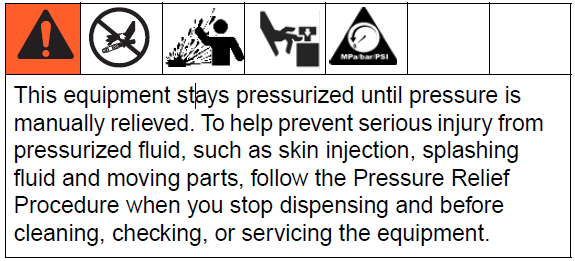
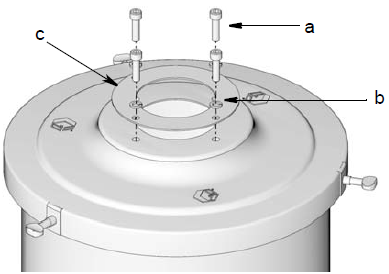
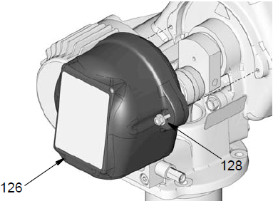
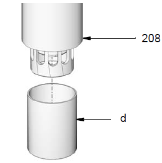
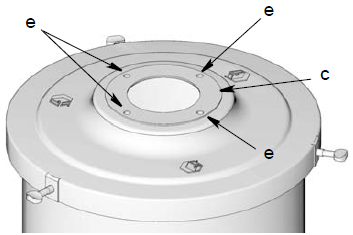
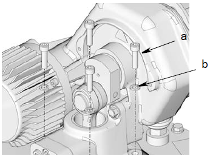
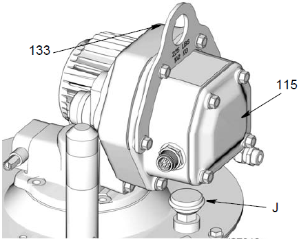
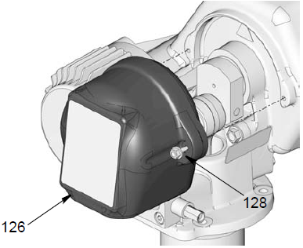

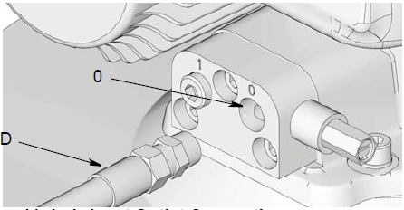
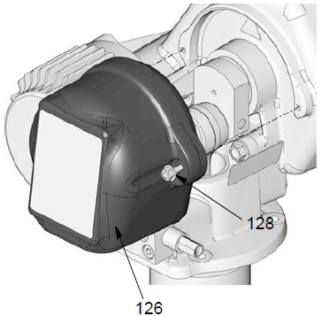
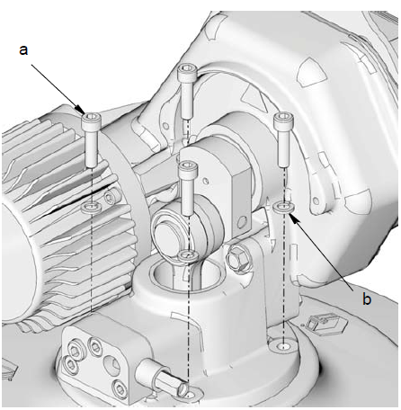
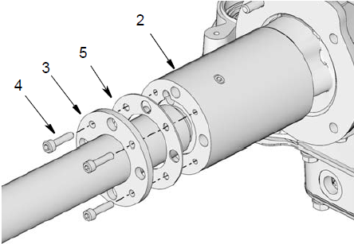
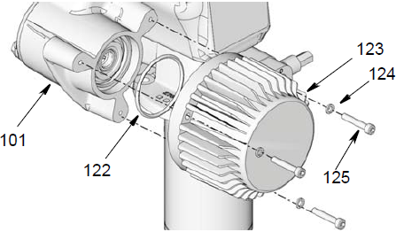
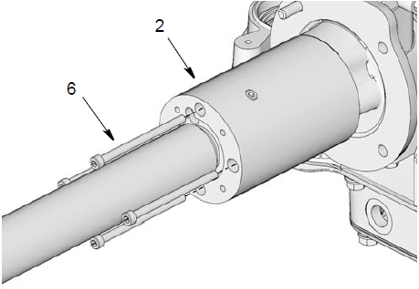
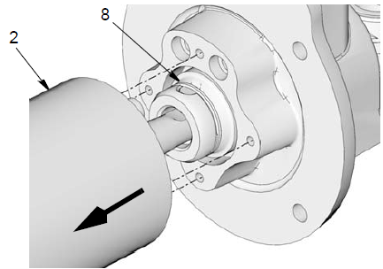
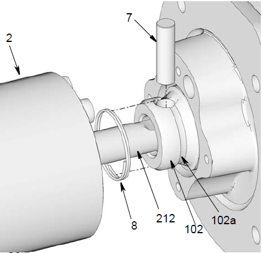
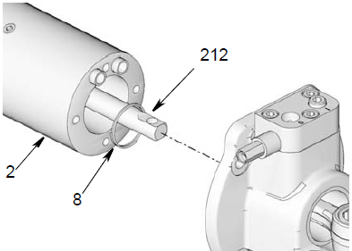
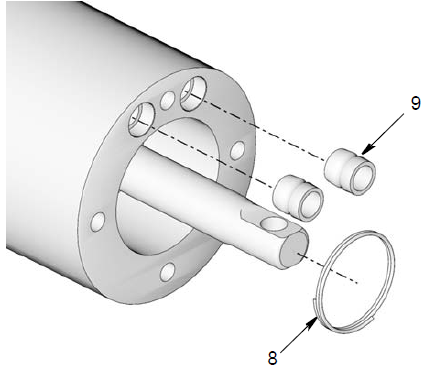
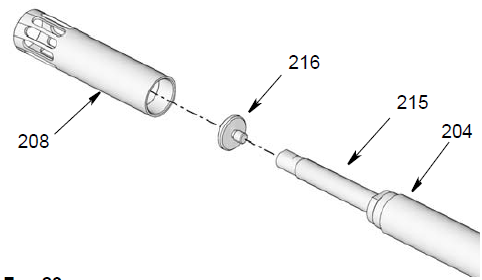
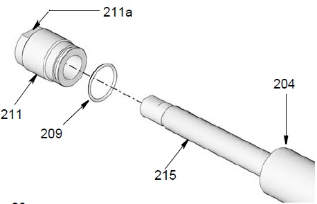
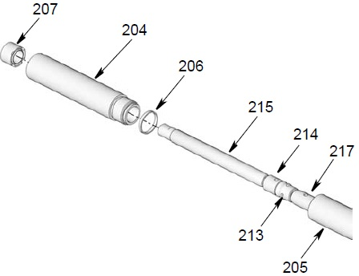
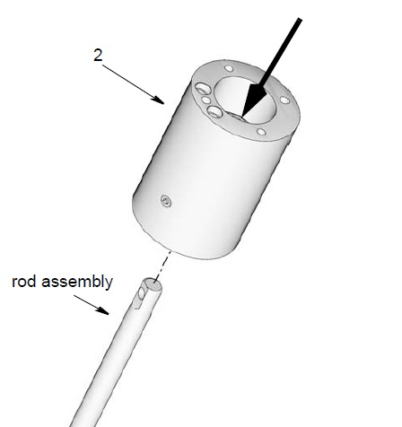
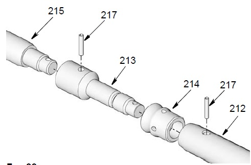
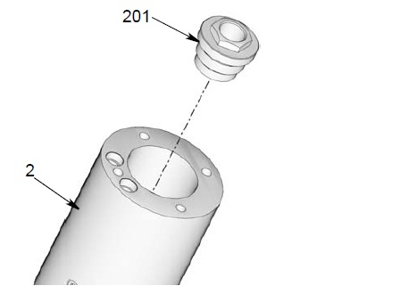
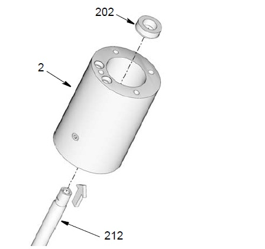
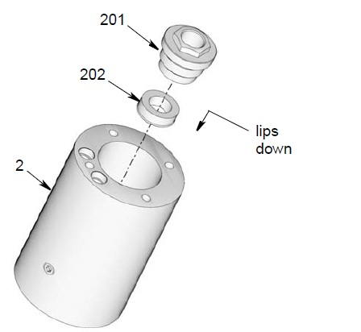
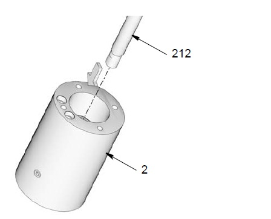
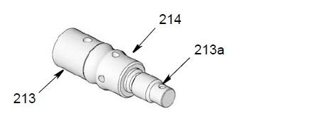
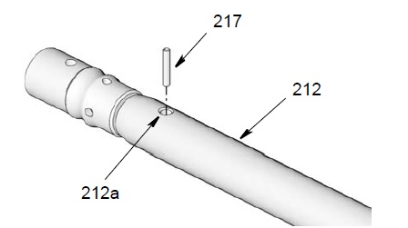
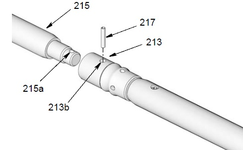
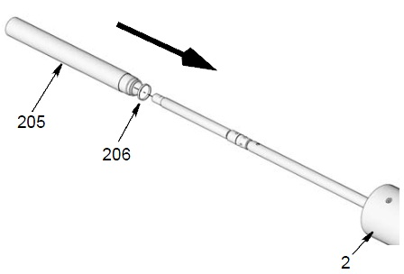
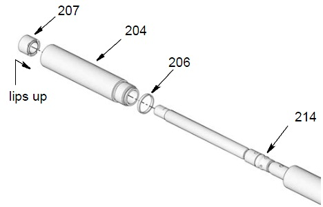
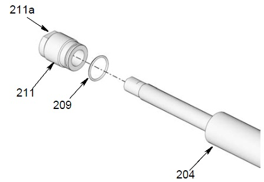
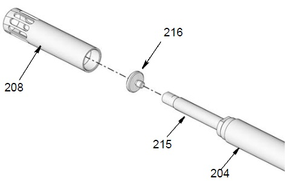
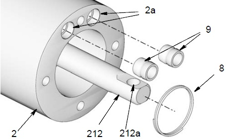
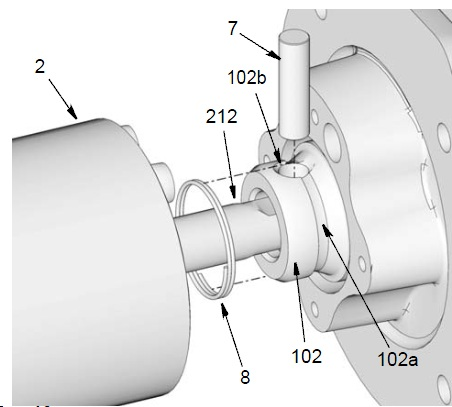
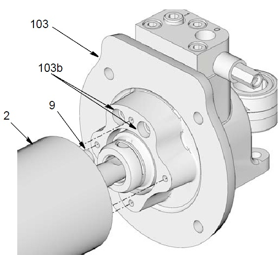
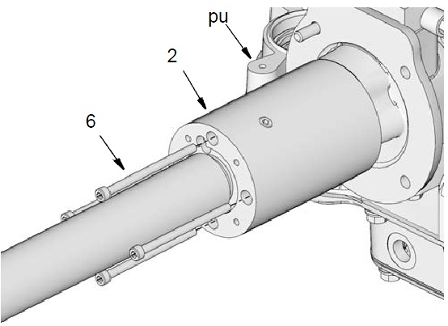
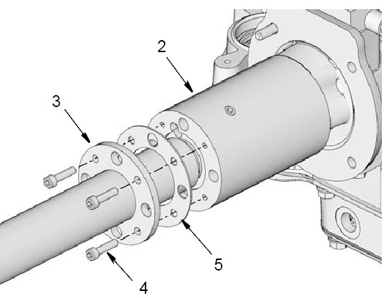
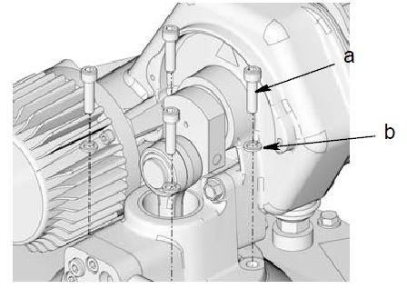
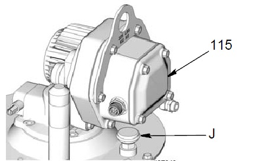
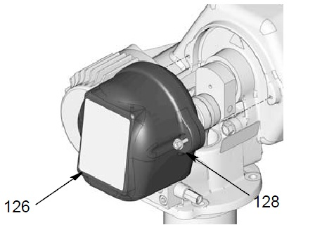
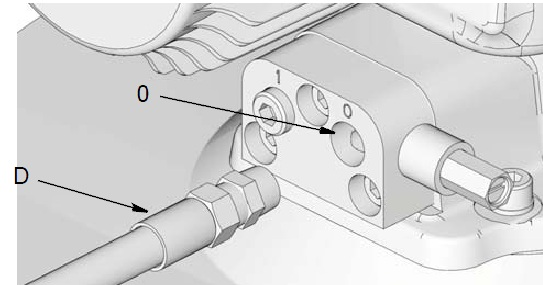
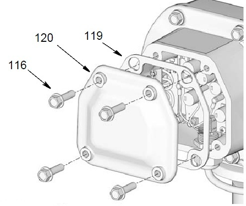
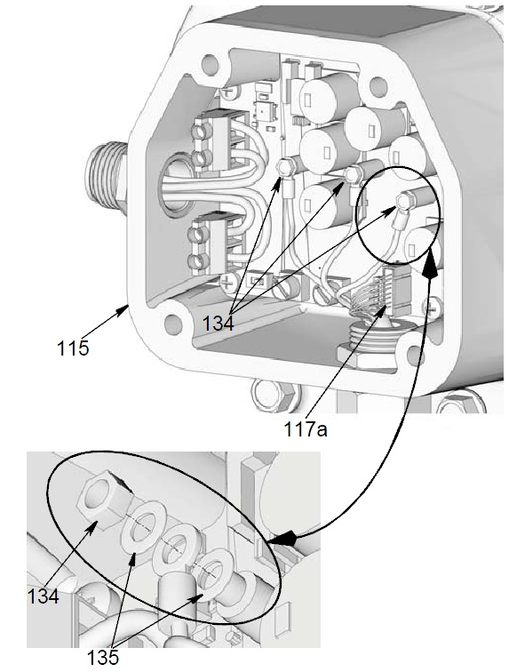
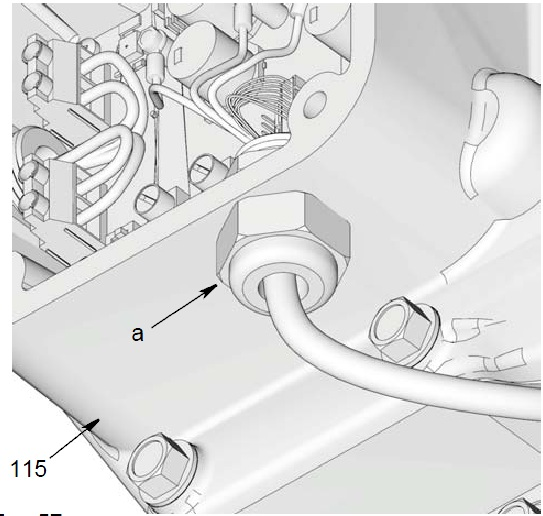
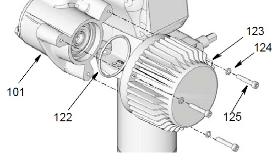
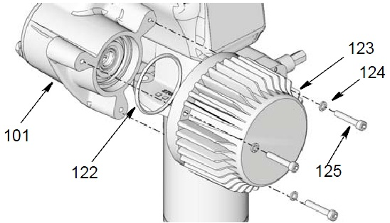
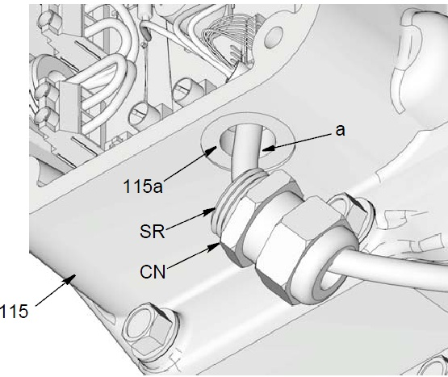
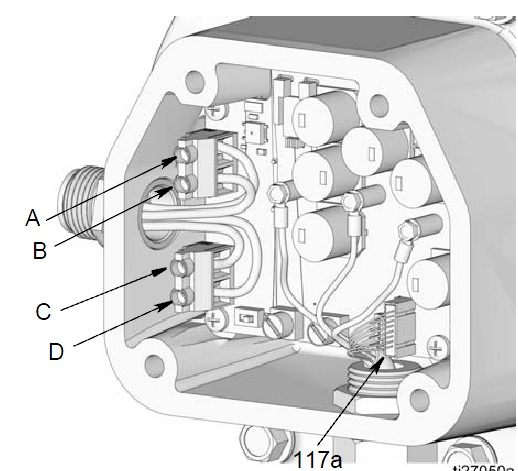